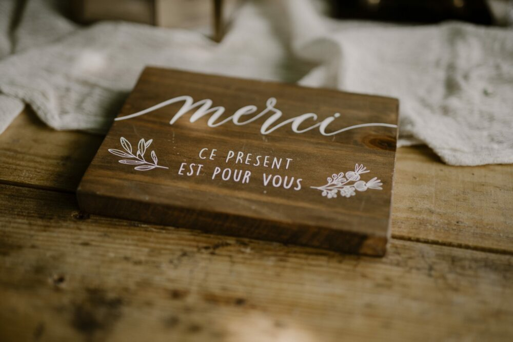
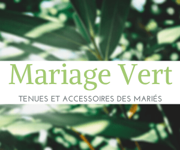
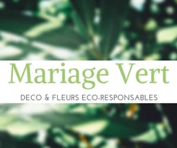
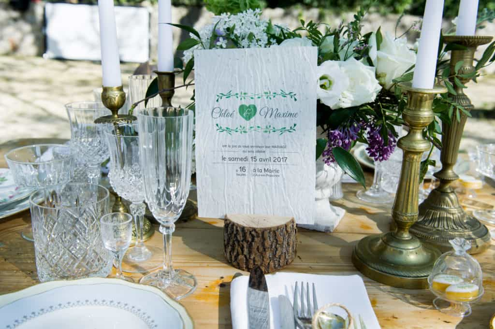
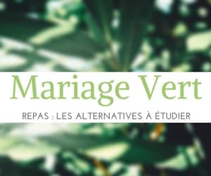

Éco-responsable
Choisir des fleurs locales et durables pour votre mariage
Offrir une esthétique pleine de sens à votre jour J tout en réduisant votre impact sur l'environnement.
Astuces, inspirations et retours d'expériences pour organiser un mariage respectueux de la planète.
Offrir une esthétique pleine de sens à votre jour J tout en réduisant votre impact sur l'environnement.

Organiser un mariage est un moment de joie, mais aussi une véritable aventure financière. Conseils pratiques.

Une wedding planner ne se contente pas de coordonner. Découvrez les métiers invisibles derrière ce titre.

Des solutions pratiques pour une planification sans stress : agenda, applications et bien plus.

Le guide pour un mariage respectueux de l'environnement et de vos convictions.

La Provence, terre d'inspiration pour les mariages alliant paysages enchanteurs et ambiance chaleureuse.

L'importance d'une organisation sans stress pour un mariage réussi. Pourquoi faire appel à une wedding planner ?

Un mariage plus vert et responsable pour un impact positif sur l'environnement.

Mariage en vue ? Le choix du type de cérémonie est l'une des premières grandes décisions à prendre.

Un choix éthique et durable pour votre grand jour. Le menu est l'une des décisions les plus importantes.

Des conseils pratiques pour organiser un mariage respectueux de l'environnement sans faux pas.

Des conseils pratiques pour un mariage éco-responsable. L'éco-responsabilité au cœur de vos préparatifs.

Les cadeaux d'invités sont une belle manière de remercier vos proches. Découvrez des alternatives durables et originales.

Un guide pratique pour organiser le mariage de vos rêves, de la date au Jour J.

En 2025, les futurs mariés sont de plus en plus nombreux à choisir des options durables pour leur mariage.

Il n'y a pas que dans l'organisation d'un mariage que le zéro déchet est possible. Découvrez comment l'adopter au quotidien.

Comment choisir une tenue de mariage éco-responsable, aussi bien pour elle que pour lui.

Quelle atmosphère souhaitez-vous transmettre à vos invités ? Conseils pour une décoration naturelle et durable.

Après le lieu et le traiteur, place aux invitations. Comment envoyer des faire-parts qui respectent l'environnement.

Quelques fondamentaux à connaître pour choisir le bon wedding planner et comprendre son rôle.

Comment composer un menu de mariage responsable, local et de saison pour réduire votre empreinte écologique.
Les caractéristiques d'un lieu de mariage vert et éco-responsable. Comment trouver la perle rare en Provence.
Idées reçues, mythes et réalités sur le métier de wedding planner. Tout ce que vous devez vraiment savoir.